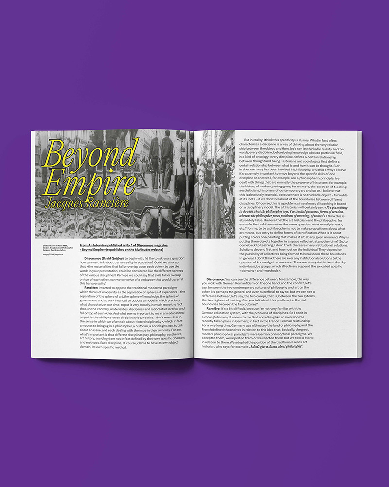
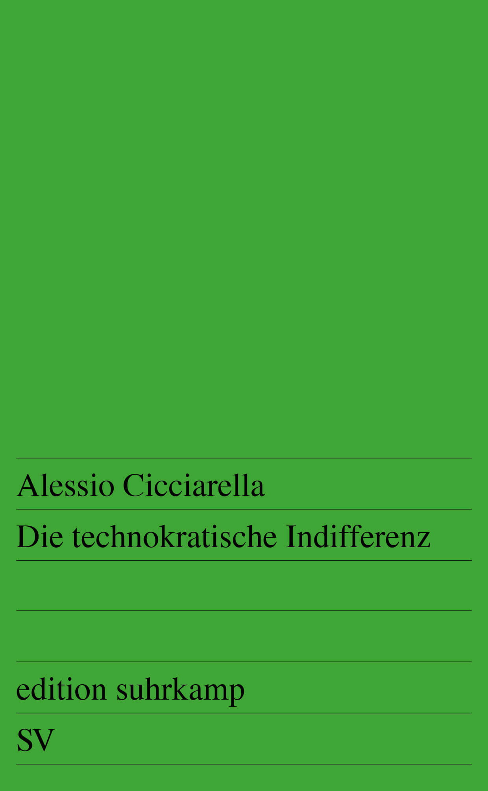
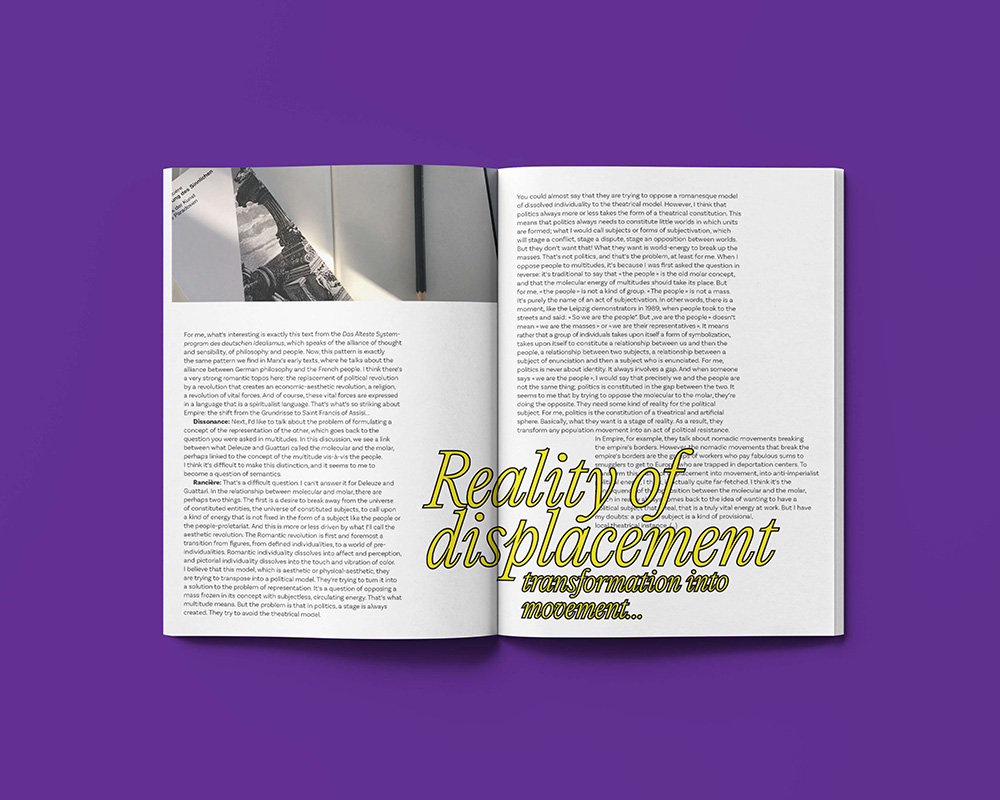
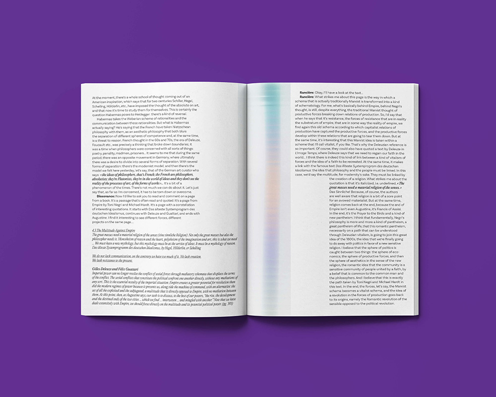

In this semester at Merz Academy Stuttgart, our project course (School of Artistic Research) was experimenting with collective creation focusing on creative writing and intermedial design. Therefore, we’ve evoked an editorial office structure containing various collective research groups, each operating based on discussions about Mary Shelley’s »Frankenstein« regarding her socio-philosophical analysis on 19th century’s civilization, the utility of literary horror storytelling in general and its effects on experiencing the contemporary presence.
From this perspective, our research group tried to remediate part one of the »Empire« trilogy by investigating its hauntological influences (Mark Fisher) on 21st century milestones like cybernetics and following the proprietary progress of LLMs. Further we endeavored to bring on our findings by applying performative aesthetics on marxist thoughts—e.g. on general intellect or his interpretation on the critique of work—to evoke innovative models of imagined future.
Excerpt from the brochure, written by Lukas Walter
Im gegenwärtigen Semester an der Merz Akademie Stuttgart widmete sich unser Projektkurs (School of Artistic Research) einem experimentellen Verfahren kollektiver Kreation mit besonderem Fokus auf literarisches Schreiben und intermediales Design. Zu diesem Zweck konstituierten wir eine redaktionelle Organisationsstruktur, innerhalb derer verschiedene kollektive Forschungsgruppen operierten. Deren Arbeit basierte auf einer intensiven Auseinandersetzung mit Mary Shelleys Roman »Frankenstein«, insbesondere hinsichtlich ihrer sozio-philosophischen Analyse der Zivilisationsdynamiken des 19. Jahrhunderts, der Funktion literarischer Horrornarrative im Allgemeinen sowie deren Wirkmacht für die Erfahrung gegenwärtiger Präsenz.
Aus dieser Perspektive heraus unternahm unsere Forschungsgruppe den Versuch, den ersten Teil von »Empire« einer Remediatisierung zu unterziehen, indem wir dessen hauntologische Implikationen im Anschluss an Mark Fisher untersuchten und diese mit signifikanten Entwicklungsschüben des 21. Jahrhunderts – etwa der Kybernetik sowie der proprietären Fortschrittslogik großer Sprachmodelle (LLMs) – in Beziehung setzten. Darüber hinaus bemühten wir uns, unsere Ergebnisse durch die Anwendung performativer Ästhetiken auf marxistische Denkfiguren – beispielsweise auf das Konzept des General Intellect oder seine Kritik der Arbeit – produktiv zu machen, um innovative Modelle imaginierter Zukünfte zu evozieren.
Auszug aus der Broschüre, geschrieben von Lukas Walter


